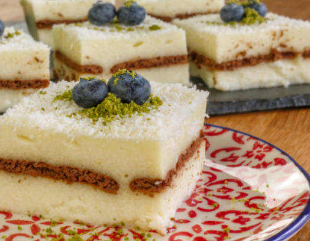

Pratik ve lezzetli olan tarifler hiç unutulmaz mutlaka bir şekilde saklanır. Sütlü irmik tatlısı da o tariflerden birisi. Ana malzemesi süt ve irmik olan tatlının bisküvi ile uyumunu siz de beğeneceksiniz.

4-6 kişilik
Dilerseniz bir gün önceden yapıp soğumaya bırakabilirsiniz
30-40dk hazırlanma
Malzemeler:
1 paket kakaolu bisküvi
1 su bardağı şeker
9 yemek kaşığı irmik
1 litre süt
1 paket vanilya
fındık içi
Yapılışı:
Sütlü irmik tatlısı yapmak için öncelikle soğuk sütü tencereye alın.
Şeker ve irmiği ilave edin. Kısık ateşte boza kıvamına gelene kadar karıştırarak pişirin.
Ocaktan almadan önce vanilya ekleyelim ve karıştırdıktan sonra ocaktan alalım.
Tatlımızın yarısını borcama dökün.
Üzerine kakaolu bisküvilerden 1 sıra dizin.
Kalan muhallebiyi de bisküvilerin üzerine boşaltın.
İrmik tatlımız Ilındıktan sonra buzdolabına kaldırarak birkaç saat dinlendirin.
Soğuk olarak servis yapın. Servis yaparken üzerine fındik içi serpebilirsiniz.